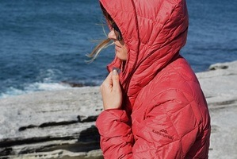

EVERYTHING YOU NEED TO KNOW ABOUT TRAVEL JACKETS
People have been travel since the beginning of time. The nature of this activity for every individual is entirely different. Some people like traveling for entertainment, some for business, and some for medical purposes.
There are countless other reasons why people visit different places. People in different parts of the world usually travel to areas that are the polar opposite of the regions they typically reside in which is understandable.
The reason for this is because they get to see new scenery and experience new weather and conditions. Experiencing all of these new and different things every once in a while freshens a person’s mind.